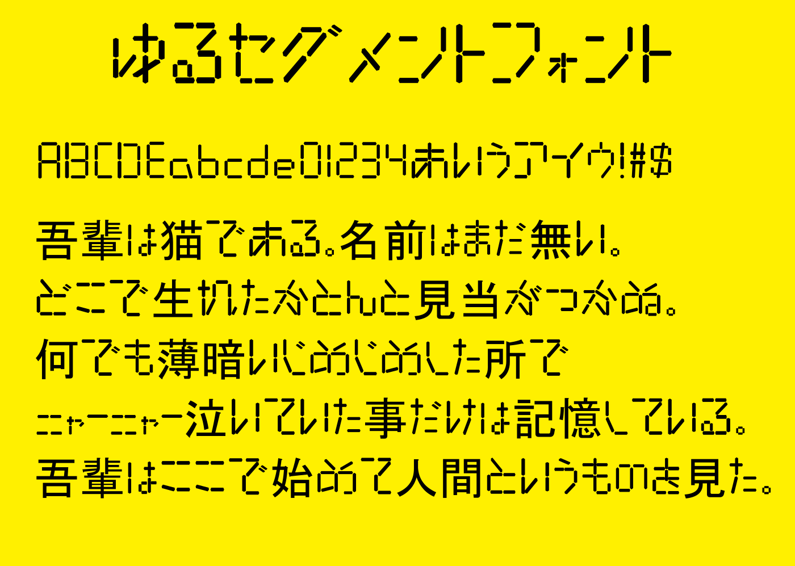

ゆるセグメントフォント/ホーム

フォント概要
このフォントは、セグメント風のデザインでなおかつセグメントの位置や長さを固定しないことで、セグメントのパリッと感と読みやすさとの両立を目指したフォントです。
- アルファベット・日本語(ひらがな/カタカナ)に対応!
- 小文字と大文字の識別が簡単!
- ゆるっとかつパリッとしたフォント
対応文字:英数字/日本語ひらがな・カタカナ/基本的な記号
試し打ち
・テキストボックスに入力することで、フォントのプレビューを確認することができます。
・フォントサイズ
・入力欄
・プレビュー
ダウンロード
※使用前に利用規約を確認するようにしてください